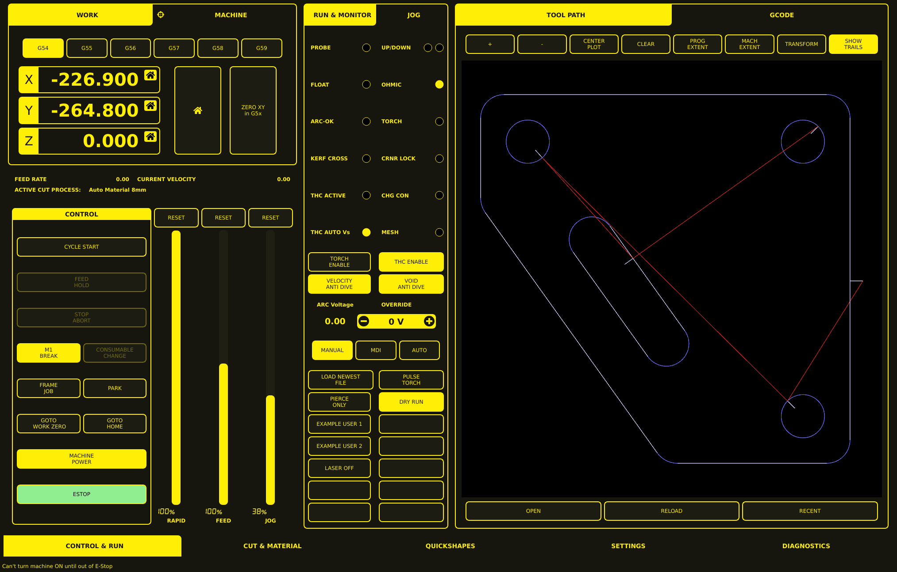

Control & Run Tab
The Control & Run tab (labeled CONTROL & RUN in the bottom navigation bar) is the primary operational panel. It is divided into three vertical work areas: a coordinate and machine-controls area on the left, a monitoring and process-controls area in the center, and a tool-path and G-code visualization area on the right.

Layout
The Control & Run screen is divided into three vertical areas:
Area |
Content |
|---|---|
Left |
WORK and MACHINE tabs, coordinate selection, axis readouts, control panel, and override sliders |
Center |
RUN & MONITOR and JOG tabs, status indicators, plasma-process controls, and utility buttons |
Right |
TOOL PATH and GCODE tabs, viewer toolbar, tool-path viewport, and file controls |
A persistent navigation bar runs along the bottom of the screen.
Left Area: Position and Controls
WORK and MACHINE Tabs
The upper-left panel has two tabs:
WORK: selected and highlighted in yellow. Provides coordinate system and setup functions.
MACHINE: an alternate coordinate or machine-state view.
Coordinate System Selection
A row of six buttons selects the active coordinate system:
G54 — currently selected
G55
G56
G57
G58
G59
Axis Position Readouts
Three large digital displays show the current machine or work coordinates:
X: — X-axis position
Y: — Y-axis position
Z: — Z-axis position
Each axis row includes a home-style icon, suggesting an axis reference, homing, or zero-related function.
Positioning and Zeroing Controls
To the right of the axis readouts are two tall buttons:
A large button with a home icon — homing or reference function
ZERO XY in G5x — set the X and Y work zero for the selected G5x coordinate system (see Sheet Alignment)
Status Strip
Below the coordinate panel, a status strip displays:
FEED RATE — current feed rate
CURRENT VELOCITY — current machine velocity
ACTIVE CUT PROCESS — the selected cutting process or material preset (click to change; see Parameters)
Control Panel
The lower-left CONTROL panel contains the principal machine-operation buttons:
Button |
Function |
|---|---|
CYCLE START |
Resume or start the loaded G-code program |
FEED HOLD |
Pause the program mid-cut |
STOP / ABORT |
Stop or abort the current operation |
M1 BREAK |
Enable or invoke an optional program stop |
CONSUMABLE CHANGE |
Toggle consumable change offset mode |
FRAME JOB |
Trace or check the boundary of the loaded job |
PARK |
Move the machine to a predefined parked position |
GOTO WORK ZERO |
Move to the active work-coordinate origin |
GOTO HOME |
Move toward the machine home position |
MACHINE POWER |
Control machine power state |
ESTOP |
Emergency-stop status/control area |
Several controls may appear dimmed when their corresponding functions are unavailable or inactive.
Override Sliders
Three tall vertical sliders occupy the lower center of the left section. Each slider has a RESET button above it:
Override |
Description |
|---|---|
RAPID |
Manual override of rapid travel speed |
FEED |
Manual override of programmed feed speed |
JOG |
Manual override of jog speed |
Override limits are configured in the INI file:
MAX_FEED_OVERRIDE = 2.000000
Status Message
A status message at the bottom-left displays machine interlock information, such as:
Can’t turn machine ON until out of E-Stop
Center Area: Monitoring and Process Controls
RUN & MONITOR and JOG Tabs
The narrow center panel has two tabs:
RUN & MONITOR: selected. Shows status indicators, plasma-process controls, and utility buttons.
JOG: alternate manual-motion controls.
Status Indicators
The upper portion contains paired labels and circular status lamps that report digital inputs, torch states, and plasma-process conditions:
Indicator |
Description |
|---|---|
PROBE |
Probe status |
UP / DOWN |
Z-axis direction indicators |
FLOAT |
Float switch status |
OHMIC |
Ohmic probe status |
ARC-OK |
Cutting arc is established and stable |
TORCH |
Torch energized |
KERF CROSS |
Kerf cross status |
CRNR LOCK |
THC corner lock active |
THC ACTIVE |
Thermal Height Control active |
CHG CON |
Consumable change active |
THC AUTO Vs |
THC auto volts mode |
MESH |
Mesh sensing mode |
Filled yellow circles indicate active states; outlined circles indicate inactive states.
Torch-Height and Anti-Dive Controls
A group of four large buttons provides direct plasma-process controls:
Button |
Function |
|---|---|
TORCH ENABLE |
Enable the torch |
THC ENABLE |
Enable Thermal Height Control (see Settings) |
VELOCITY ANTI DIVE |
Prevent unwanted torch movement during velocity changes |
VOID ANTI DIVE |
Prevent unwanted torch movement when a void is detected |
Arc-Voltage Override
The panel displays:
ARC Voltage — current arc voltage reading
OVERRIDE — voltage override value
Minus and plus buttons flank the voltage override value, allowing the operator to decrease or increase the override.
Operating Mode Selection
Three mode buttons are provided:
Mode |
Description |
|---|---|
MANUAL |
Manual operation |
MDI |
Manual data input |
AUTO |
Automatic program execution |
Program and Torch Utility Controls
The lower portion contains paired utility buttons:
Button |
Function |
|---|---|
LOAD NEWEST FILE |
Load the most recently used file |
PULSE TORCH |
Pulse the torch |
PIERCE ONLY |
Pierce-only test mode |
DRY RUN |
Non-cutting program test mode |
EXAMPLE USER 1 |
Configurable user function |
EXAMPLE USER 2 |
Configurable user function |
LASER OFF |
Disable the alignment laser |
Several blank button positions may be reserved for configurable or future user functions.
Right Area: Tool Path and G-code Viewer
TOOL PATH and GCODE Tabs
The large right section has two primary tabs:
TOOL PATH: selected. Displays the tool-path visualization.
GCODE: alternate program-text view.
Viewer Toolbar
A horizontal toolbar sits above the drawing viewport:
Button |
Function |
|---|---|
+ |
Zoom in |
- |
Zoom out |
CENTER PLOT |
Center the drawing in the viewport |
CLEAR |
Clear the displayed plot or trails |
PROG EXTENT |
Fit the program extents to the view |
MACH EXTENT |
Fit the machine extents to the view |
TRANSFORM |
Apply or open coordinate/view transformations |
SHOW TRAILS |
Display motion or tool trails |
Tool-Path Viewport
The central black viewport visualizes a cutting program. It displays programmed geometry (contours, holes, slots, cutting paths) and travel trails.
File Controls
Three large buttons appear below the viewport:
Button |
Function |
|---|---|
OPEN |
Open a program or G-code file |
RELOAD |
Reload the current file |
RECENT |
Access recently used files |
Exiting the VCP
There are two ways to exit MonoKrom Plasma:
Window close button — Click the X on the window title bar.
Long press MACHINE POWER — Hold the MACHINE POWER button for several seconds.
An exit warning can be enabled by checking the Exit Warning checkbox on the Settings tab.